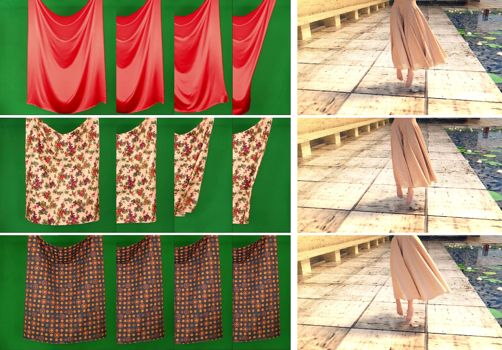
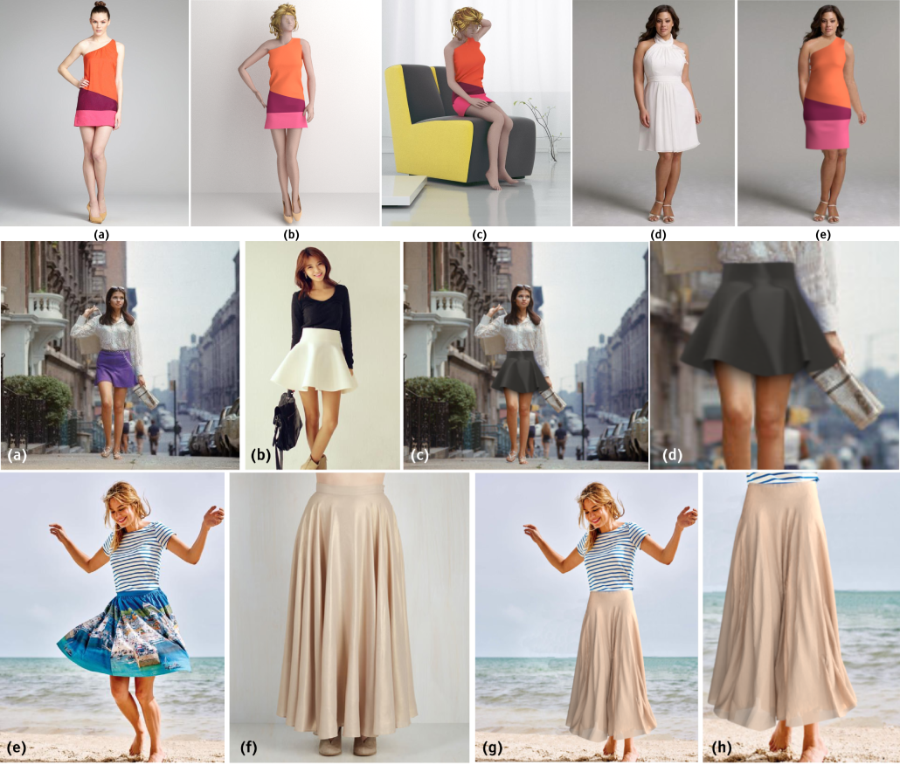
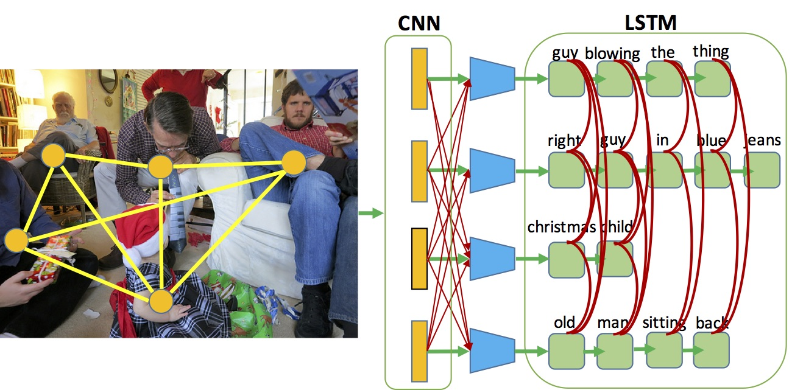
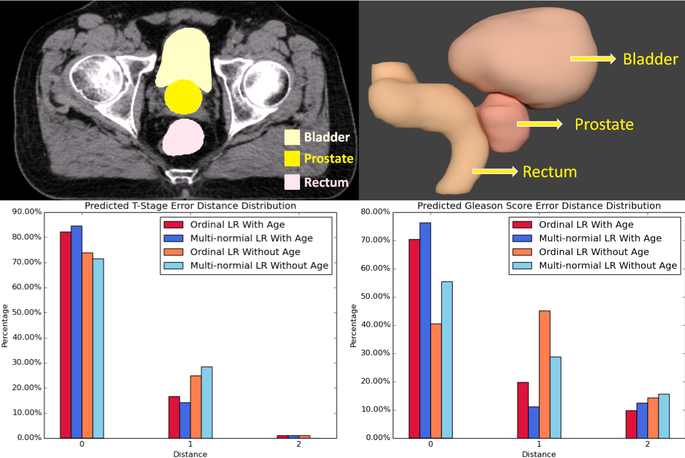
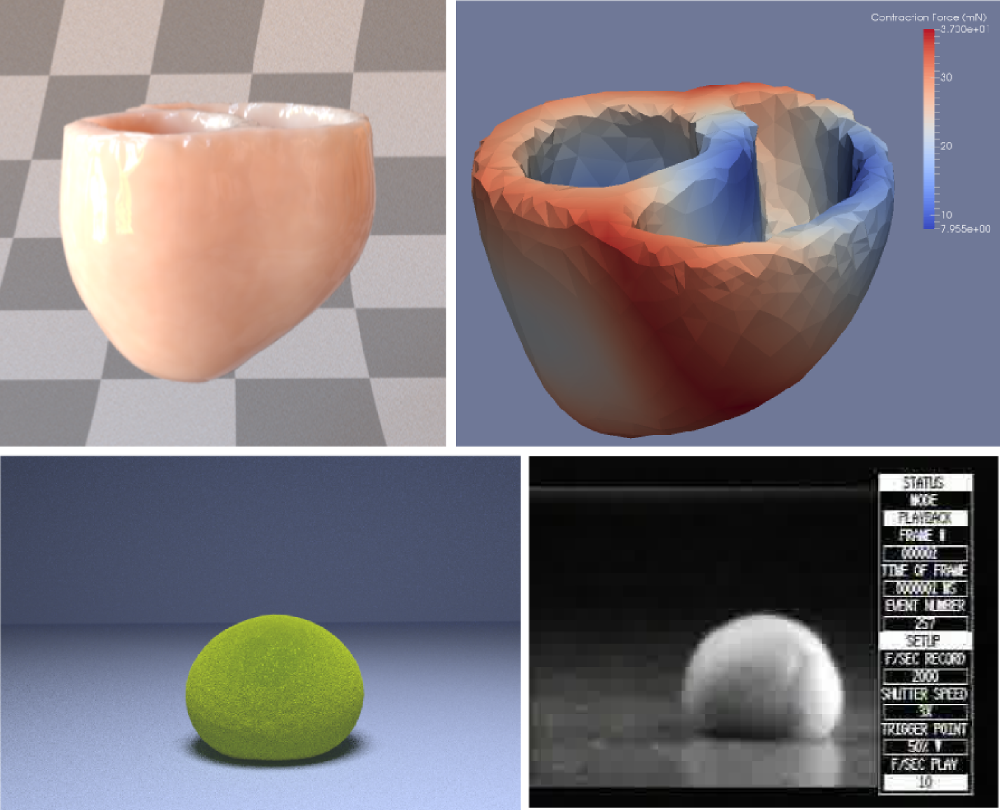
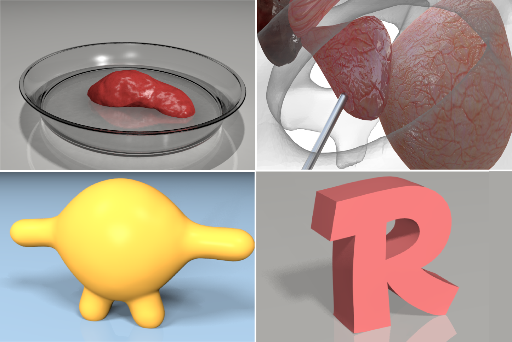
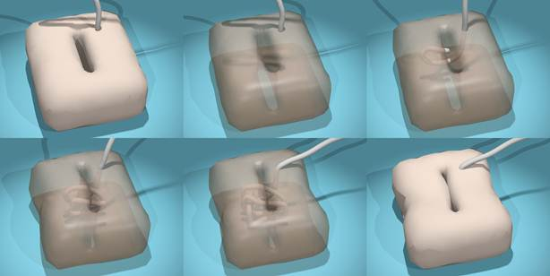

Publications




Classification of Prostate Cancer Grades and T-Stages based on Tissue Elasticity Using Medical Image Analysis
Shan Yang, Vladimir Jojic, Jun Lian, Ronald Chen, Hongtu Zhu and Ming C. Lin
International Conference on Medical Image Computing and Computer Assisted Intervention, MICCAI 2016
[paper][project][supplementary document]



Real-time simulation for buried suture
Shan Yang, Wenlong Lu, Lixu Gu
Computer Assisted Radiology and Surgery (CARS), 2012